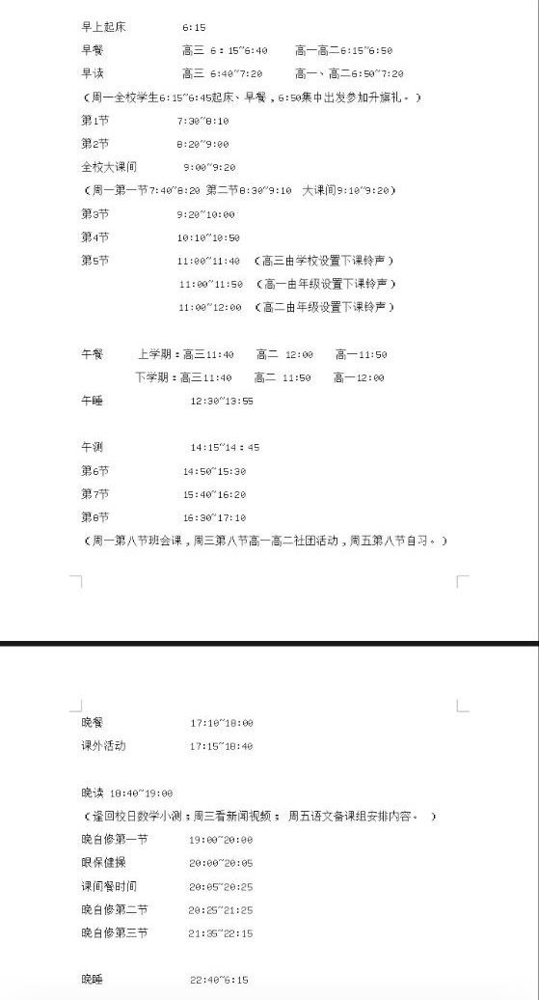
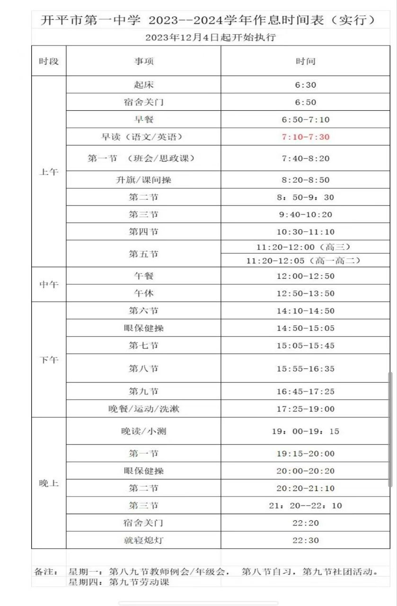

事先说明 本文只对比开平市第一中学与开侨中学 其他学校笔者未了解过 故不对比
其次 本文大部分对比来源于较为主观（指学长学姐（包括但不限于在读、毕业的老师）和开桥一中的老师、领导以及宣传册）
由于笔者个人认为并不完全客观 所以有观点不符的地方请指出 但请有一定的事实论据
（叠甲
一、关于师资力量
据了解开侨中学专任教师261人研究生30人高级教师96人（有教师在五大学科奥赛有突出成绩 本文后面会加以讨论）;第一中学高级教师100人特级教师2人江门市优秀教师7人等等（获荣誉的老师很多 但笔者并不知道是否有重复 故只列举一部分）
从荣誉数据上来看 第一中学的老师似乎更多荣誉 师资方面第一中学的确会强一些
但是 关于高中三年的生活主要还是靠自己（最幸运的遇到适合自己的老师） 师资也固然重要
二、关于分班情况
据宣传册的招生计划 开侨中学新高一计划800人（推荐生440人） 英才班（清北班）四个班每班30人 创新班四个班每班50人 平行班八个班每班55人;第一中学新高一800人（推荐生440人） 开设三个卓越班共120人
首先 虽然能上清北班当然是好的 但是普通班也不会差到哪里去（笔者的朋友虽然在开桥普通班 但任然有年级40左右）
其次 关于创新班不能保证 来自一位朋友 似乎到了高二还是高一下学期就不存在创新班
三、关于竞赛
据了解 开侨中学的学科类（不包含信息类）竞赛今年来成绩突出 关于具体成绩可以到公众号查找;而第一中学的信息类竞赛成绩突出 科创中心笔者认为是开平的标杆（董事会舍得给钱）
所以 个人希望往哪方面发展 可以对比下两校近年来的竞赛成绩
四、交通
毋庸置疑的 开侨中学由于地处市区内 离大部分学生的家都不算远 个人认为上放学半个小时左右就能完成 并且周围也有很多小吃之类的 放学可以去消费一下;第一中学由于地处郊区 且路还是比较窄的 所以堵车的可能性很大（笔者的姐姐在教伦中学就读 深有体会）
所以个人认为开桥的地理优势对于大部分学生还是完胜且会占考虑内容很大一部分的
五、环境
关于这点 第一中学由于地处郊区 树林比较多 光污染较小 且上学路上你可以看看田野（不过应该没这么多闲情雅致吧（）） 但同时地处郊区 虫子会较多;开侨中学沿着潭江 江景同样很美丽
所以关于环境 看个人喜欢哪里（
六、关于学校的发展情况
笔者由于不了解多少所以不多说什么
但现在所了解的 开侨中学有新的宿舍楼;第一中学今年九月份的操场会翻新完 并且两年内会建成一栋新的艺术楼
七、关于作息
开侨中学

第一中学

MISC（杂项/碎碎念）
由于本文写的较为仓促 所以可能会有写遗漏 请指正
这可能并不是最终版本 后面也许会陆陆续续进行修改/添加（如果我记得的话）
（听说一中漂亮学姐多一些（bushi
如果最后实在无法选择的话 就使用信仰大法吧（你的老师/榜样/朋友的选择）
最后 笔者因交通和历史原因选择了开侨中学
（ 但是个人感觉是很重要 喜欢哪间就去哪间 最主要的还是个人的努力